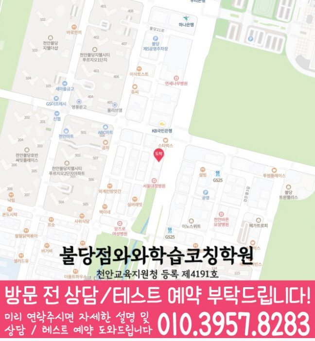

문제를 틀린 결과보다 왜 그 풀이를 선택했는지 확인해야 고등 수학의 막힌 지점이 보입니다.
☁️ 충남 천안시 서북구 불당동 고등 수학 학습관리
불당동 고등 수학 내신·모의고사 준비
학교 시험과 모의고사에서 틀린 문제를 나누어 보면 보완할 단원을 정리하기 좋습니다. 불당점의 고1·고2 수강 조건과 위치는 아래 지점 안내에서 확인하세요.
불당동
고등 수학
내신·모의고사
오답 재학습
불당동에서 확인할 불당점 수강·위치 정보
최근 교재와 직접 푼 답안, 일주일 동안 실제로 완료한 과제를 준비하세요. 이해한 내용과 다시 도움받을 내용을 나누어 설명하고, 다음 공부의 단원·분량·재확인 날짜를 어떻게 정할지 질문하세요.
- 주소
- 충남 천안시 서북구 불당33길 22 고은타워 805호
- 시작 시간 참고
- 평일 오후 2시이후
- 주말 안내
- 토요일 가능. 참고 시간: 토요일 오전10시~오후1시 국어.
| 과목 | 안내 학년 |
|---|---|
| 국어 | 초1~고3 |
| 영어 | 초1~고2 |
| 수학 | 초1~고2 |
| 과학 | 개설 학년 문의 |
| 사회 | 개설 학년 문의 |
안내 학년과 현재 모집 가능 여부는 구분해서 확인하세요. 실제 요일·시작과 종료 시각·교재·수업 횟수·비용은 희망 과목과 학년을 정해 상담에서 확인할 수 있습니다.
상담 전 확인
상담할 지점과 수학 학년
- 안내 지점
- 와와학습코칭센터 불당점
- 고등 수학 학년
- 고1·고2
- 방문 주소
- 충남 천안시 서북구 불당33길 22 고은타워 805호
현재 모집 여부와 선택 과목, 희망 요일은 상담에서 확인해 주세요.
교습비는 지점 자료의 과목·시간 기준을 확인하고 교재비와 추가 프로그램 포함 여부를 함께 문의해 주세요.
홈페이지 상담 연락처: 010-6839-8283. 방문 전에는 이 페이지의 주소와 희망 과목·학년을 함께 확인해 주세요.

이미지를 누르면 확대할 수 있습니다. 원본 크기로 전환해 작은 글씨와 전체 내용을 읽어 보세요.

이미지를 누르면 확대할 수 있습니다. 원본 크기로 전환해 작은 글씨와 전체 내용을 읽어 보세요.
찾아오시는 길
와와학습코칭센터 불당점의 위치와 주변 교통편을 확인하세요.
- 주소
- 충남 천안시 서북구 불당33길 22 고은타워 805호
주변 정류장
- 서울대정병원
- 불당상업지구입구
- 불당상업지구입구
- 불당지웰시티5블럭
주변 버스
- 간선
- 830(배방환승정류장-아산역) · 840(삼덕시스템-배방환승정류장 남문) · 860(배방환승정류장 서문-아산역) · 990(고속터미널-아산국민체육센터) · 830(아산역 건너-배방환승정류장 남문) · 840(배방환승정류장-삼덕시스템) · 860(아산역 건너-배방환승정류장 남문) · 990(모종블랑루체A-종합터미널)
- 일반
- 10(천안시청-천안시청)(천안시청시의회 방면)(심야) · 21(백석농공단지-천안시종합사회복지관) · 605(천안시청-풍세면행정복지센터) · 10(천안시청-천안시청)(백석11단지 방면)(심야) · 21(천안시종합사회복지관-백석농공단지) · 605(풍세면행정복지센터-천안시청) · 6 · 90(천안아산역-종합터미널) · 96(계광중학교-린스트라우스)
- 급행간선
- 15(두정역푸르지오 남문-e편한세상3차 두정역입구) · 5(두정역푸르지오 동문-e편한세상3차 두정역입구) · 15(두정역입구-e편한세상3차 두정역입구) · 5(두정역입구-e편한세상3차 두정역입구)
교통편 확인 . 버스 운행과 정차 위치는 이용 전에 확인해 주세요.
상담 준비 기준
불당동 고등 수학학원, 상담 전 먼저 확인할 기준
불당동 고등 수학학원을 알아볼 때는 시간표나 수업 횟수보다 학생이 고등 수학에서 어디서 멈추는지를 먼저 봐야 합니다. 개념은 이해한 것 같은데 문제 적용이 흔들리는지, 시험 때 계산 실수가 반복되는지, 모의고사 오답이 특정 단원에 몰리는지를 구분해야 상담 방향이 선명해집니다.
특히 고등 수학은 한 단원의 공백이 다음 단원까지 이어지기 쉽습니다. 그래서 상담 전에는 최근 내신 시험지, 모의고사 오답, 현재 학교 진도, 사용하는 교재를 함께 확인하고, 수업 후 플래너와 오답 재학습이 이어지는지 보는 것이 중요합니다.
불당점의 위치와 수강 조건은 위의 수업·위치 안내에서 확인할 수 있습니다.
학교 시험 범위와 모의고사 오답은 성격이 달라서 같은 플래너 안에서도 관리 기준을 나누어야 합니다.
수업에서 푼 문제를 끝으로 두지 않고, 반복 오답을 다시 풀 수 있는 상태까지 연결합니다.
Current Position
불당동 학습 자료를 먼저 읽어야 하는 이유
충남 천안시 서북구 불당동에서 고등 수학학원을 찾는다면 성적표 한 장만으로 수업 방향을 결정하기 어렵습니다. 불당동 고등 수학학원 상담에서는 최근 학습 기록을 과목별로 펼쳐 놓고, 이해한 내용과 다시 설명하기 어려운 내용을 분리하는 과정이 우선입니다.
재학 학교의 실제 진도표와 시험 범위를 가져오면 현재 필요한 복습 범위를 정리하기 좋습니다.
Coaching Route
진단에서 오답 재학습까지 연결하는 방법
불당동 학생의 상담 기록에서 내신 문제는 풀지만 모의고사에서 풀이 순서와 시간 배분이 흔들리는 경우가 드러난다면 과목 전체를 다시 시작할 필요는 없습니다. 막힌 단원과 문제 유형을 좁힌 뒤, 먼저 복구할 부분과 현재 진도를 유지할 부분을 나누는 것이 현실적입니다.
고등 수학 내신과 모의고사 관리의 핵심은 같은 시간을 똑같이 나누는 것이 아닙니다. 학교 진도, 개념 이해, 서술 과정, 변형 문제와 계산 정확도를 먼저 살피고, 공통 문항 풀이, 시간 배분, 오답 원인 분류와 재풀이를 근거로 시험 일정 전까지 필요한 우선순위를 조정합니다.
고등 수학 내신과 모의고사 계획은 시험 직전 목록과 평소 누적 목록을 나누어 관리합니다. 충남 천안시 서북구 불당동 학생의 일정에 맞춰 긴급한 범위와 꾸준히 유지할 항목을 구분하고, 어느 한쪽도 기록 없이 밀리지 않도록 점검합니다.
Review Standard
결과 약속보다 관리 과정을 확인하세요
고등 수학학원 상담에서는 학부모와 학생이 같은 완료 기준을 공유하는 것이 중요합니다. 불당동 고등 수학학원 페이지의 기준을 참고하되 실제 수업 가능 여부와 세부 운영은 상담에서 확인하고, 확인되지 않은 결과를 미리 약속받지 않는 편이 안전합니다.
High School Math
불당동 학년별 상담 자료와 공부 점검 기준
학년별로 배우는 범위와 시험 일정이 다릅니다. 아래는 학습 준비를 위한 일반 안내이며, 수강 가능 학년은 불당점 안내에서 확인해 주세요.
고1은 개념을 들은 뒤 유형에 적용하는 속도와 서술 과정이 중요합니다. 첫 내신 전에는 현재 단원, 교재 난도, 계산 실수, 풀이 생략 습관을 먼저 점검합니다.
고2는 새 단원만 따라가면 이전 단원 공백이 숨어 있을 수 있습니다. 학교 시험 범위와 반복 오답을 함께 보고, 단원별 우선순위를 플래너에 반영합니다.
고3은 점수보다 오답의 원인 분류가 먼저입니다. 시간 부족, 개념 누락, 조건 해석 오류, 계산 실수를 나누어 봐야 실제 보완 순서를 잡을 수 있습니다.
Decision Points
불당동 고등 수학학원 선택 전 체크할 4가지
지금 배우는 단원과 학교 진도가 맞지 않으면, 수업을 들어도 시험 대비가 흐려질 수 있습니다.
같은 단원에서 계속 틀리는지, 풀이 과정이 불안한지, 계산 실수인지 원인을 나누어 확인합니다.
설명을 듣고 끝나는 수업보다 다시 풀 수 있는 상태까지 연결되는 오답 루틴이 필요합니다.
학생이 무엇을 배웠고, 다음 주에 무엇을 보완해야 하는지 보호자가 이해할 수 있어야 합니다.
학습 점검
불당동 고등 수학학원을 찾는다면 어떤 학생에게 필요할까요?
불당동에서 고등 수학학원을 찾는 학생 중, 개념 설명은 이해하지만 문제 풀이가 오래 걸리는 학생, 내신과 모의고사 점수 차이가 큰 학생, 시험 전 무엇부터 복습해야 할지 모르는 학생에게 상담이 필요합니다.
상담에서는 “수학을 못한다”가 아니라 어느 단원, 어떤 유형, 어떤 풀이 과정에서 멈추는지를 확인합니다. 이 기준이 잡히면 고등 수학 수업도 진도 중심이 아니라 보완 순서 중심으로 정리할 수 있습니다.
불당점 교습비 확인
수강할 과목과 수업 시간에 맞는 금액을 지점별 교습비 자료에서 확인하세요. 추가 프로그램과 교재비 포함 여부는 상담에서 함께 확인해 주세요.
Checklist
불당동 고등 수학학원 상담 전 준비자료
최근 내신 시험지와 틀린 문제를 준비해 주세요.
모의고사 오답 중 반복되는 단원이나 유형을 표시해 주세요.
현재 학교 진도와 사용하는 교재, 숙제량을 확인해 주세요.
개념 이해, 문제 적용, 계산 실수, 시간 부족 중 어디가 가장 걱정되는지 정리해 주세요.
FAQ
불당동 고등 수학학원 자주 묻는 질문
학생의 학교 진도와 오답 기록을 바탕으로 상담을 준비해 보세요.
불당동 고등 수학학원 상담은 무엇부터 확인하나요?
먼저 고등학생의 현재 단원, 학교 진도, 최근 시험지와 반복 오답을 확인합니다. 불당동 고등 수학학원 상담에서는 수업 횟수보다 개념 공백과 문제 적용 단계가 어디에서 막히는지를 먼저 봅니다.
고1 학생도 불당동 고등 수학학원 상담이 필요한가요?
고1은 중학교식 풀이 습관에서 고등 내신형 문제 풀이로 넘어가는 시기입니다. 개념을 안다고 느껴도 서술 과정, 변형 문제, 시험 시간 배분에서 흔들릴 수 있어 초기에 학습 흐름을 점검하는 것이 좋습니다.
불당동 고등 수학학원에서 모의고사 오답도 함께 보나요?
상담 시 모의고사 오답을 가져오면 단순 실수인지, 개념 누락인지, 풀이 전략 문제인지 구분하는 데 도움이 됩니다. 내신과 모의고사의 약점을 따로 보되, 반복되는 단원은 같은 플래너 안에서 관리합니다.
상담 전에 어떤 자료를 준비하면 좋나요?
최근 내신 시험지, 모의고사 오답, 현재 사용하는 교재, 학교 진도, 자주 틀리는 단원을 준비하면 좋습니다. 자료가 구체적일수록 불당동 학생에게 필요한 보완 순서를 더 정확히 정리할 수 있습니다.
불당동 고등 수학학원 선택 시 가장 중요한 기준은 무엇인가요?
고등 수학은 진도보다 수업 후 관리가 중요합니다. 개념 설명, 유형 적용, 반복 오답, 시험 전 복습이 플래너와 피드백으로 이어지는지 확인하는 것이 좋습니다.
상담 참고
불당동 고등 수학 상담 시 확인할 학습 변화
설명은 이해하지만 변형 문제에서 막힌다면 개념 부족과 적용 순서 문제를 나누어 확인해야 합니다.
같은 단원이 반복해서 틀리는지 확인하되, 내신 범위와 모의고사의 약점은 서로 다른 복습 일정으로 정리합니다.
오답노트를 작성했는지보다 일정 시간이 지난 뒤 답을 보지 않고 다시 풀 수 있는지를 확인하는 것이 중요합니다.
관련 안내
불당동 고등 수학학원과 함께 보면 좋은 페이지
불당점 학습 공간 참고 사진

공용 학습 공간 참고 사진으로, 불당점의 실제 시설 사진은 아닙니다.